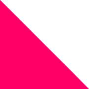

mulassa.cat
Novetats
6 de novembre
El videoclip de la Mulassa
Estrena divendres a YouTube
Enllaços
Juga ara
Fes ballar el bestiari
El projecte
Bestiari, música i codi obert
Instagram
Segueix les novetats
GitHub
Ets programador? Col·labora-hi
T'he fet somriure?
Convida'm a un cafè ❤️

ondori.dev
Qui hi ha darrere de tot això?
 6 de novembreEl videoclip de la Mulassa
6 de novembreEl videoclip de la Mulassa
6 de novembreEl videoclip de la Mulassa
6 de novembreEl videoclip de la Mulassa